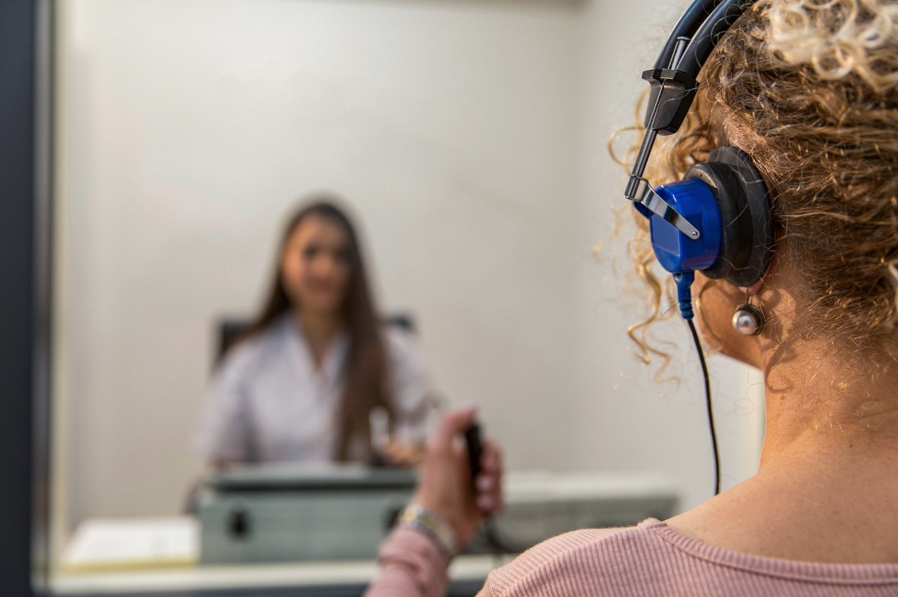
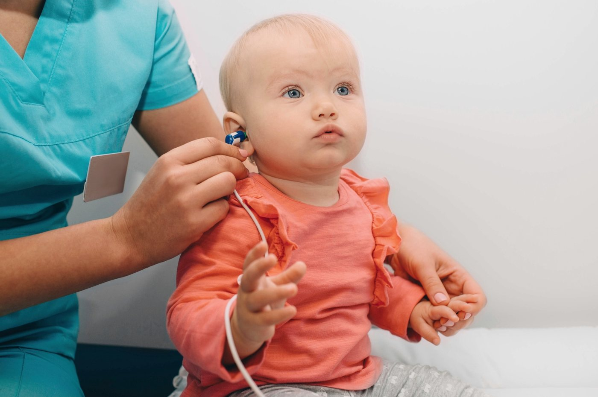

L’évaluation audiologique (test d’audition complet) est une activité réservée aux audiologistes. Elle permet d’identifier la présence ou non d’un trouble auditif, sa nature et son degré, mais aussi vos difficultés au quotidien et vos besoins. Chaque évaluation combine des tests reconnus et une écoute attentive. Vous repartez avec des résultats expliqués clairement, une conclusion et des recommandations personnalisées. Avec votre consentement, le rapport est transmis aux professionnels concernés.
Ces deux services sont souvent confondus, mais ils n’ont pas du tout la même portée.
Le dépistage auditif, souvent offert gratuitement, permet simplement de repérer une baisse d’audition possible. Il répond à une seule question : y a-t-il lieu de pousser plus loin ? Il peut être réalisé par différents intervenants en santé, mais il ne permet pas de préciser la cause ni le degré d’une perte auditive, ni d’évaluer vos besoins réels ou les solutions qui vous conviendraient.
L’évaluation audiologique, elle, est une activité réservée aux audiologistes. Elle permet d’identifier la présence ou non d’un trouble auditif, sa nature et son degré, ainsi que vos difficultés au quotidien et vos besoins. Elle mène à une conclusion et à des recommandations personnalisées.
En résumé : le dépistage soulève une question, l’évaluation y répond. Si un dépistage suggère une baisse d’audition, une évaluation complète par une audiologiste est l’étape essentielle qui suit.
Un bilan complet de votre audition pour identifier la présence ou non d’un trouble auditif, sa nature et son degré, et comprendre l’origine de vos difficultés. Vous repartez avec un portrait clair et des pistes de solution adaptées à vos besoins.

Rapide, ludique, et parfois décisive pour le parcours d’un enfant. L’évaluation audiologique pédiatrique s’adapte à l’âge et au développement de chaque enfant.
À la suite de l’évaluation, je vous dirige vers un médecin ORL si une intervention médicale s’avère nécessaire. Et rappelons-le : aucune référence médicale n’est requise pour consulter une audiologiste au privé.
L’évaluation pédiatrique est offerte au point de service de Lévis.
Pour comprendre pourquoi et quand évaluer, lisez notre guide : 5 raisons de faire évaluer l’audition de votre enfant.

Un acouphène qui s’installe soulève beaucoup de questions. L’évaluation vise à mieux le comprendre, à en rechercher la cause, à mesurer son impact réel sur votre quotidien et à identifier des moyens concrets pour mieux le gérer ou le réduire.
Un acouphène d’une seule oreille, pulsatile ou d’apparition soudaine mérite une attention rapide. En savoir plus : D’où vient vraiment l’acouphène ?
J’exerce de façon indépendante dans les locaux de cliniques d’audioprothésistes partenaires. Les rendez-vous se prennent directement au point de service de votre choix.
Harmonie Audition
790, route Jean-Gauvin, local 230
(418) 476-1455
Clinique de l’Audition Bois & Associés
5500, boul. Guillaume-Couture, bureau 111
(418) 837-3626
Clinique de l’Audition Bois & Associés
83, boul. Taché Ouest
(418) 248-7077
Clinique de l’Audition Bois & Associés
442, route de l’Église, bureau 9
(367) 440-0202
Lévesque et Rioux, Audioprothésistes
200, rue Témiscouata, suite 210
(418) 862-2907
Appelez le point de service le plus proche : on vous orientera vers l’évaluation la plus adaptée.